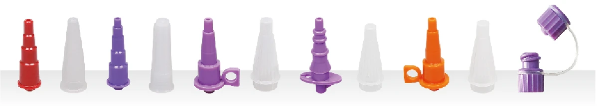
多种连接头形式，供不同营养输注配置选用。
ENTERAL FEEDING
从袋体到连接端，完整呈现营养输注产品系列。
PRODUCT / SPECIFICATION
泵用与重力式两种套装，袋体、管路及连接件一体展示。
PRODUCT / SPECIFICATION
双袋泵用套装，可选双袋组合或带穿刺接头的组合。
CONNECTION SYSTEMS
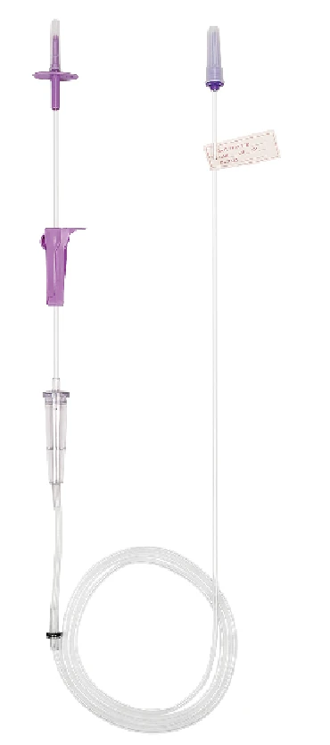
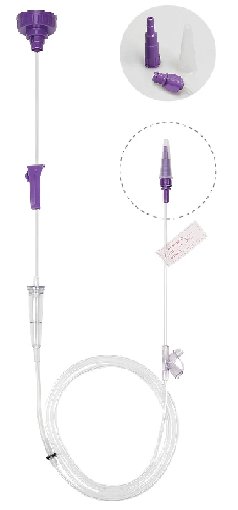
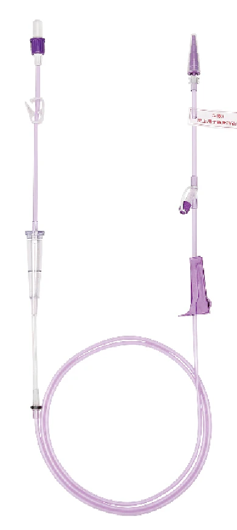

多种连接头形式，供不同营养输注配置选用。
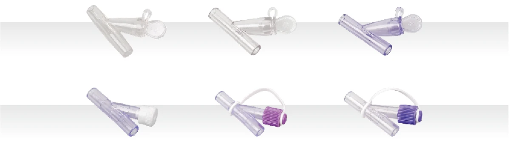
透明及带盖注射端口，提供多种连接配置。
UROLOGY
收集、引流与计量，覆盖不同泌尿护理需求。
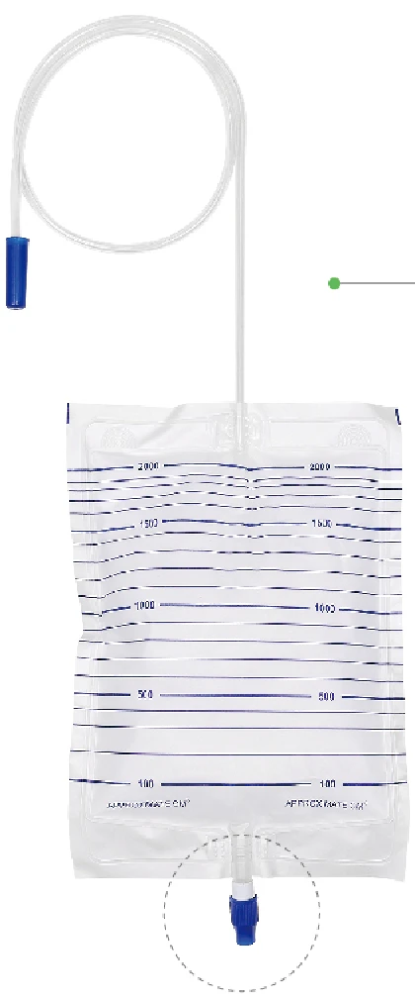
PRODUCT / SPECIFICATION
透明或白色袋体，可选不同出口阀及悬挂方式。
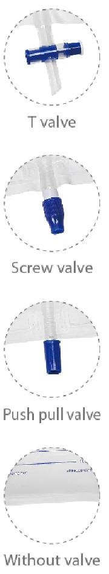
T valve
Screw valve
Push-pull valve
Without valve
PRODUCT / SPECIFICATION
清晰刻度、抗返流结构及多种袋体与接头形式。
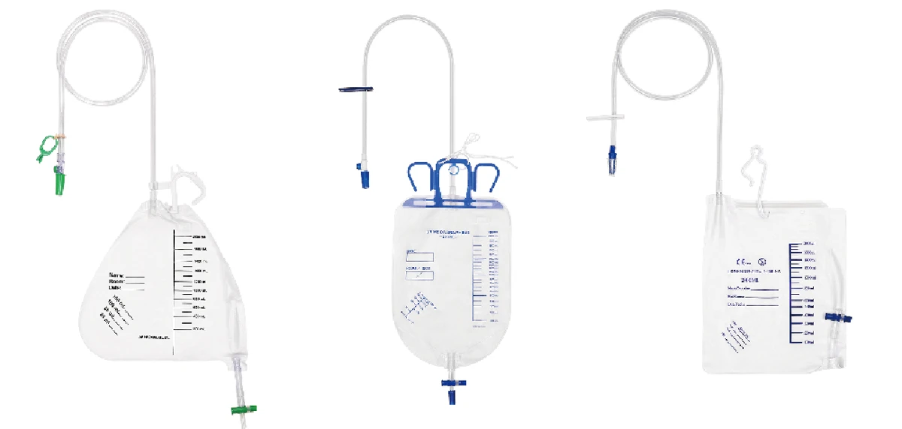
PRODUCT IN FOCUS
PRODUCT / SPECIFICATION
独立计量腔与引流袋组合，配合清晰刻度、取样端口与抗返流结构。
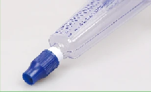
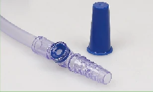
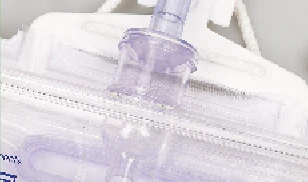
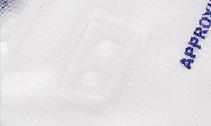
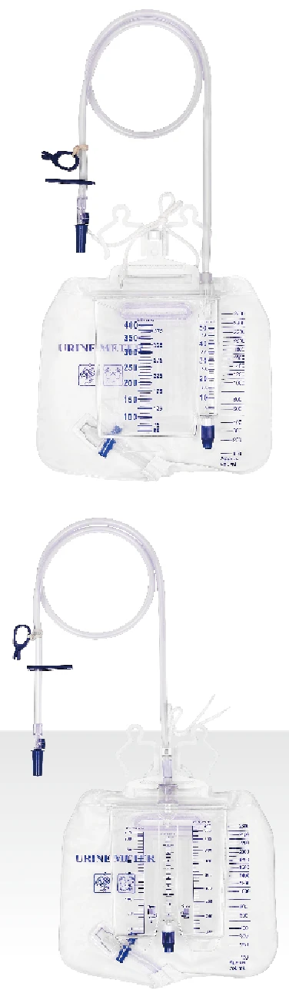
PRODUCT / SPECIFICATION
腿袋搭配固定带，多种容量及管长可选。
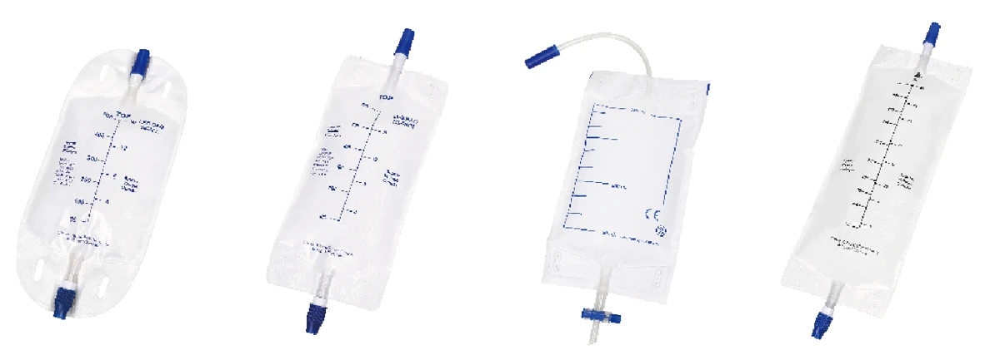
SUCTION
内衬、收集容器与连接管路，构成清晰的产品配置。
PRODUCT / SPECIFICATION
四种容量，可选关闭过滤器及预装固化剂配置。
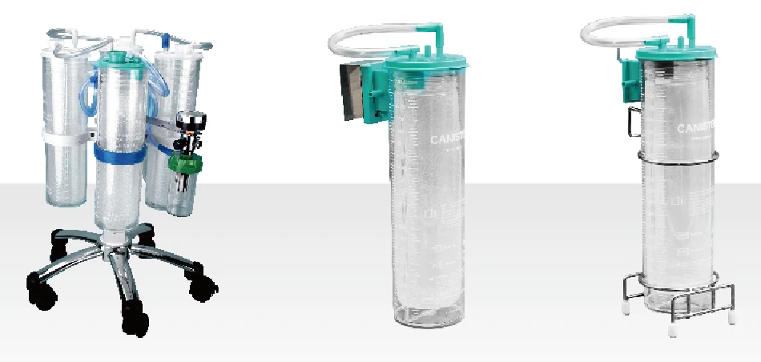
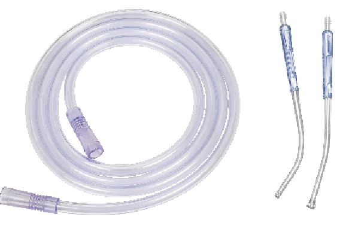
PRODUCT / SPECIFICATION
吸引管搭配 Yankauer 手柄，可选不同长度及口径。
LIQUID COLLECTION
面向透析废液收集及灌肠应用的袋体与套装。
PRODUCT / SPECIFICATION
用于腹膜透析引流液收集，展示袋体、管路与连接端细节。
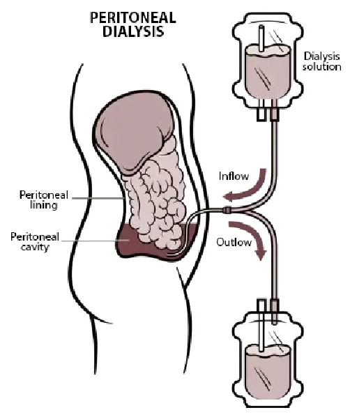
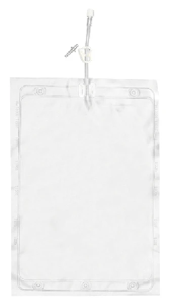
PRODUCT / SPECIFICATION
用于血液透析过程中的废液收集。
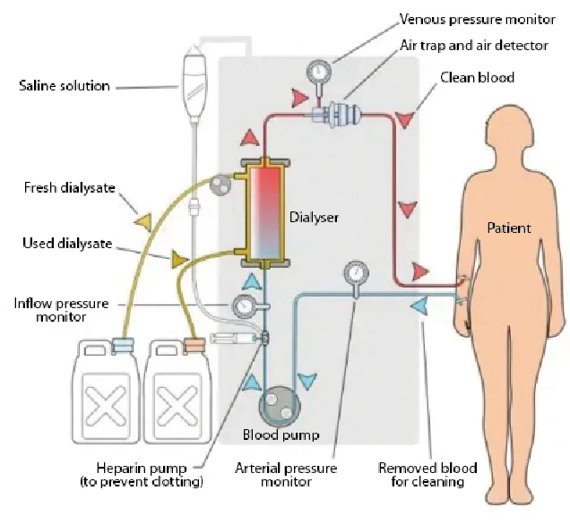
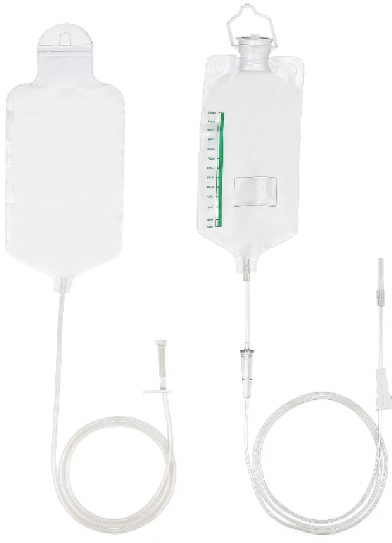
PRODUCT / SPECIFICATION
袋体及管路套装，可根据需求选择管路与阀门配置。
QUALITY & CERTIFICATIONS
产品资料列示制造商的生产设施及质量体系。具体型号的认证与注册资料，请联系我们确认。